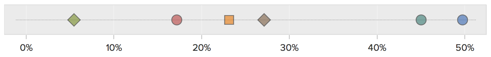
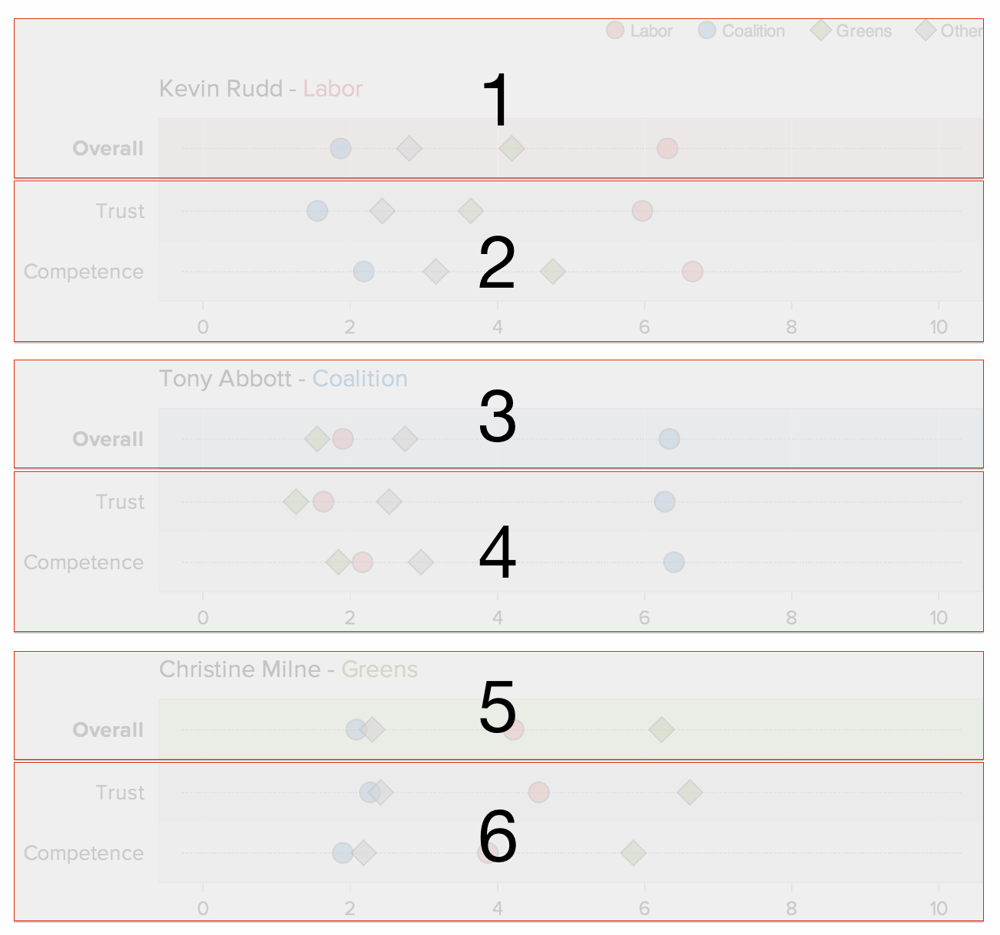
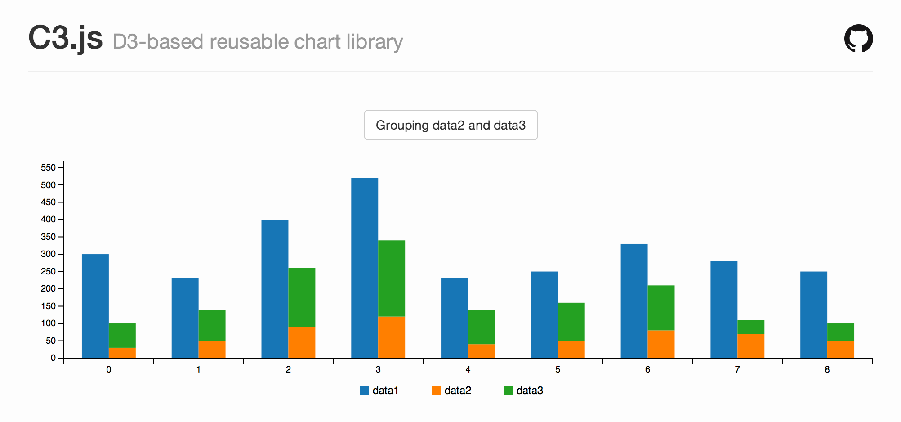
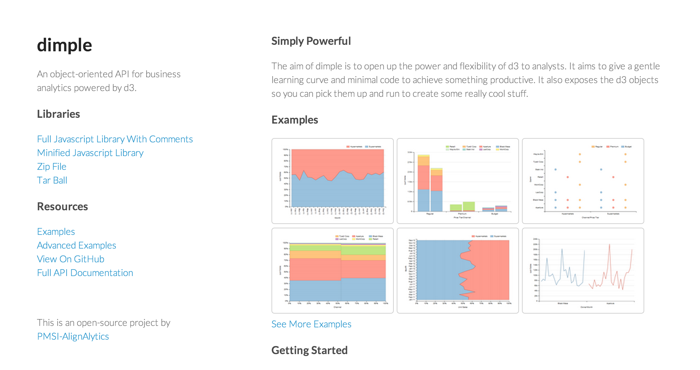

Reusable
Responsive Charts
with D3.js

Data Visualisation

D3.js
Data-Driven Documents

Selection
// Select a single element
d3.select("h1").style("font-size", "3em");
// Select multiple elements
d3.selectAll("p").style("color", "white");
// Select SVG elements
d3.selectAll("circle").attr("r", 25);
Data
// Bind data and use it to set each element's background color
d3.selectAll("div")
.data(["red", "#00FF00", "rgb(0,0,255)"])
.style('background-color', function(d) { return d; });
// Let the text content of each element depend on the data
d3.selectAll("p")
.data([1, 2, 3, 4, 5])
.text(function(d) { return "Number: " + d; });
Data (cont.)
// Bind more complex data, and use different properties
var circles = [
{ radius: 10, center: [5, 20], color: "red" },
{ radius: 5, center: [20, 10], color: "blue" },
{ radius: 15, center: [30, 30], color: "green" }
];
d3.selectAll("circle")
.data(circles)
.attr("r", function(d) { return d.radius; })
.attr("cx", function(d) { return d.center[0]; })
.attr("cy", function(d) { return d.center[1]; })
.attr("fill", function(d) { return d.color; });
Join, Enter, Update & Exit
function update(data) {
// Join
var p = d3.select("body").selectAll("p").data(data);
// Enter
p.enter().append("p");
// Enter + Update
p.text(function (d) { return "Number: " + d; });
// Exit
p.exit().remove();
}
Events & Transitions
d3.select("button").on("click", function () {
d3.select("body").transition()
.duration(500)
.style("background-color", "black");
});
Utilities
Scale generators
var scale = d3.scale.linear()
.domain([0, 600]). // the min/max extent of your data
.range([0, 300]); // the pixel range to map that to
scale(0); // => 0
scale(100); // => 50
SVG generators
Let's use that scale to create an SVG axis...
var axis = d3.svg.axis()
.scale(scale)
.orient("bottom")
.ticks(5);
d3.select("#chart").append("g")
.call(axis);
Also...
- Array, color & time utilities
- CSV/TSV fetching & formatting
- Map projections
- Entire chart layouts (via plugins)
Budget Interactive
It was cool, but it was also...
- Unportable
- Unresponsive
...and it took wayyy too long to build.
D3 is a library, not a framework
We need a framework, dammit!
Alex Graul & Irene Ros from...

...joined forces to make data-in-the-browser easier.
This partnership was called...
...which has spawned some great libraries, including...
"...a framework for building reusable charts with d3.js"
d3.chart
// Define a new chart type: a circle chart
d3.chart("CircleChart", {
initialize: function () { /* ... */ }
});
// Create an instance of the chart on a d3 selection
var chart = d3.select("body")
.append("svg")
.attr("height", 30)
.attr("width", 400)
.chart("CircleChart");
// Render it with some data
chart.draw([1,4,6,9,12,13,30]);
Initialization (1/2)
initialize: function () {
var chart = this;
chart.w = this.base.attr('width') || 200;
chart.h = this.base.attr('height') || 150;
chart.scale = d3.scale.linear().range([0, chart.w]);
/* ... */
}
Initialization (1/2)
initialize: function () {
/* ... */
// Create a 'layer' for the circles
chart.layer("circles", chart.base.append("g"), {
// Select the elements and bind the data to them.
dataBind: function (data) {
chart.data = data;
chart.scale.domain([0, d3.max(data)]);
return this.selectAll("circle")
.data(data);
},
// Insert actual circles
insert: function () {
return this.append("circle");
},
// Define lifecycle events
events: {
// Paint new elements, but set their radius to 0
"enter": function() {
return this.attr("cx", function(d) {
return d * 10;
})
.attr("cy", 10)
.attr("r", 0);
},
// ...then transition them to a radius of 5
"enter:transition": function() {
return this
.delay(500)
.attr("r", 5);
},
// Before removing circles, transition
// their radius back to 0
"exit:transition": function() {
return this.duration(1000)
.attr("r", 0)
.remove();
}
}
});
}
It's all about layers
When we call draw with some data, it gets passed through each layer you've defined (lines, bars, axes, labels, etc.).
Each layer knows how to:
- Bind data
- Insert elements
- Update them
- Remove them
- Perform transitions
Configuration
- Define defaults (dimensions, scales, etc.)
- Define an API for interacting with the chart at runtime:
- Access the API through a fluent interface:
chart.width(200).margin(10).circleRadius(10);
d3.chart('CircleChart', {
initialize: function () { /* ... */ },
width : function(newWidth) {
// Getter
if (!arguments.length) { return this.w; }
// Setter + side effects
this.w = newWidth;
this.base.attr('width', this.w); // svg
this.scale = d3.scale.linear().range([0, this.w]); // scale
this.draw(this.data); // redraw
return this; // chaining
},
/* ... (margin, circleRadius, etc.) ... */
});


1.35 million
Responses
So we've got some data to play with. Yay.
Reports
- Most important issues
- Question answers split by demographic
- Party leaders (trust & confidence)
- Political ideology (state-by-state)
- etc.
Scope
- Ordinal scatter plots
- Normalised, stacked bar charts
Ordinal scatter plot

Normalised stacked bar chart

Ordinal Scatter Plot: components
- Background & Grid
- Dots & Tooltips
- Axis & Labels
- Legend
- Title
(Demo)
Ordinal Scatter Plot: Code
chart.areas = {
labelsXTop: chart.base.append('g').classed('OrdinalScatterPlot_labels OrdinalScatterPlot_labels-x OrdinalScatterPlot_labels-x-top', true),
labelsXBottom: chart.base.append('g').classed('OrdinalScatterPlot_labels OrdinalScatterPlot_labels-x OrdinalScatterPlot_labels-x-bottom', true),
labelsY: chart.base.append('g').classed('OrdinalScatterPlot_labels OrdinalScatterPlot_labels-y', true),
background: chart.base.append('g').classed('OrdinalScatterPlot_background', true),
gridX: chart.base.append('g').classed('OrdinalScatterPlot_grid OrdinalScatterPlot_grid-x', true),
gridY: chart.base.append('g').classed('OrdinalScatterPlot_grid OrdinalScatterPlot_grid-y', true),
border: chart.base.append('rect').classed('OrdinalScatterPlot_border', true),
points: chart.base.append('g').classed('OrdinalScatterPlot_points', true),
legend: chart.base.append('g').classed('OrdinalScatterPlot_legend', true),
title: chart.base.append('g').classed('OrdinalScatterPlot_title', true)
};
Each area has a corresponding layer
d3.chart('OrdinalScatterPlot', {
// Expected datum properties
dataAttrs: ['metric', 'value', 'series'],
// Initialisation (+ settings, areas, layers, events)
initialize: function() { /* ... */ }
// Fluent API
// - Chart Size
width: function (width, excludesDecorations) { /* ... */ },
height: function (height, excludesDecorations) { /* ... */ },
// - Metric labels (y-axis)
metricLabelsWidth: function (width, maintainsTotalWidth) { /* ... */ },
// - Control dot shape & colour (based on series)
seriesScales: function (names, colors, symbols) { /* ... */ },
// - Legend
showLegend: function (maintainsTotalHeight) { /* ... */ },
hideLegend: function (maintainsTotalHeight) { /* ... */ },
// - Title
title: function (title, subtitle) { /* ... */ },
showTitle: function (maintainsTotalHeight) { /* ... */ },
hideTitle: function (maintainsTotalHeight) { /* ... */ },
// - Value labels (x-axis)
showLabelsX: function (maintainsTotalHeight) { /* ... */ },
hideLabelsX: function (maintainsTotalHeight) { /* ... */ },
showLabelsXTop: function (maintainsTotalHeight) { /* ... */ },
hideLabelsXTop: function (maintainsTotalHeight) { /* ... */ },
showLabelsXBottom: function (maintainsTotalHeight) { /* ... */ },
hideLabelsXBottom: function (maintainsTotalHeight) { /* ... */ },
formatLabelsX: function (formatFn) { /* ... */ },
valueDomain: function(min, max) { /* ... */ },
// - Tooltips
formatTooltips: function (formatFn) { /* ... */ },
_defaultTooltipFormat: function (d) { /* ... */ },
// - Dot animation toggle
animated: function (isAnimated) { /* ... */ },
// - Linked chart behaviours
linkSymbiote: function(symbiote) { /* ... */ },
// Fluent API internal functions
// - Scales
_updateXScale: function () { /* ... */ },
_updateYScale: function () { /* ... */ },
// - Area size measurement
_effectiveXDecorationsWidth: function () { /* ... */ },
_effectiveLeftDecorationsWidth: function () { /* ... */ },
_effectiveRightDecorationsWidth: function () { /* ... */ },
_effectiveYDecorationsHeight: function () { /* ... */ },
_effectiveTopDecorationsHeight: function () { /* ... */ },
_effectiveBottomDecorationsHeight: function () { /* ... */ },
_effectiveLegendHeight: function () { /* ... */ },
_effectiveTitleHeight: function () { /* ... */ },
_effectiveLabelsXTopHeight: function () { /* ... */ },
_effectiveLabelsXBottomHeight: function () { /* ... */ },
// - Area size/position management
_updateAreasDisplay: function () { /* ... */ }
});
Filtered Data
The same chart can be used to display
different sets of data.

Customising components
We want the x-axis labels to make sense...

chart.formatLabelsX(function (x) { return x + '%'; });
chart
.formatLabelsX(function (x) {
var label = '';
if (x > 0.9) {
label += 'More left-leaning ←';
} else if (-0.9 > x) {
label += '→ More right-leaning';
}
return label;
})
.formatTooltips(function (d) {
return 'Held by ' + d.series;
});
Toggling components
&
combining charts
This is actually 6 charts

This is actually 6 charts
First we define a function that constructs a chart with all the shared properties/defaults
function makeChart() {
return d3.select('#chart')
.append("div")
.append("svg")
.chart("OrdinalScatterPlot")
.width(700)
.height(44, true)
.valueDomain(0, 10)
.hideLegend()
.hideLabelsX()
.animated(true);
}
Then use it as a starting point for each part
var charts = [
makeChart().title('Kevin Rudd', 'Labor').showLegend(), // 1
makeChart().height(88, true).showLabelsX(), // 2
makeChart().title('Tony Abbott', 'Coalition'), // 3
makeChart().height(88, true).showLabelsX(), // 4
makeChart().title('Christine Milne', 'Greens'), // 5
makeChart().height(88, true).showLabelsX() // 6
];
Data can then be filtered by metric and passed to the corresponding chart
Styling
You may have noticed we gave every layer and child SVG elements their own distingushing CSS classes.
chart.areas = {
labelsXTop: chart.base.append('g').classed('OrdinalScatterPlot_labels OrdinalScatterPlot_labels-x OrdinalScatterPlot_labels-x-top', true),
labelsXBottom: chart.base.append('g').classed('OrdinalScatterPlot_labels OrdinalScatterPlot_labels-x OrdinalScatterPlot_labels-x-bottom', true),
labelsY: chart.base.append('g').classed('OrdinalScatterPlot_labels OrdinalScatterPlot_labels-y', true),
// ...
title: chart.base.append('g').classed('OrdinalScatterPlot_title', true)
};
This is what gives us flexibility with re-styling
By appending unique classes to some of the charts, we can style them differently:
charts[0].base.classed('ptyred', true);
charts[2].base.classed('ptyblue', true);
charts[4].base.classed('ptylightgreen', true);
.ptyred .OrdinalScatterPlot_labels-y .tick:first-child { font-weight: bold; }
.ptyred .OrdinalScatterPlot_subtitle { fill: #BE4848; }
.ptyred .OrdinalScatterPlot_border { stroke: #E7CACA; }
.ptyred .OrdinalScatterPlot_background .tick { stroke: #EFDCDC; }
.ptyred .OrdinalScatterPlot_background .tick:nth-child(even) { stroke: #F7EEEE; }
/* ...and similar CSS for .ptyblue & .ptylightgreen */

This is applicable not just to per-element style-overrides, but for theming entire charts for your own environment.
Linking interaction
// Link charts as symbiotes
charts.forEach(function (a) {
charts.forEach(function (b) {
if (a !== b) {
a.linkSymbiote(b);
}
});
});
// In one of the dot mouseover event handlers...
onActivateDot = function (d) {
function activateDot(chart) { /* ... */ }
activateDot(chart);
chart.symbiotes.forEach(activateDot);
};
Mobile?
- We can already size & resize the chart manually
- Let's automate it!
- Just bind to the window's resize event:
window.addEventListener("resize", function () { var width = $(chart.base.node().parentNode).width(); chart.width(width); }, false);
Debounce!
- Triggering events on window resize can be costly.
- Limit the number of times our handler is called.
- Debouncing the event handler is a great way to do this.
function debounce(fn, wait) {
var timeout;
return function () {
var context = this, // preserve context
args = arguments, // preserve arguments
later = function () { // define a function that:
timeout = null; // * nulls the timeout (GC)
fn.apply(context, args); // * calls the original fn
};
// (re)set the timer which delays the function call
clearTimeout(timeout);
timeout = setTimeout(later, wait);
};
}
Using debounce, the handler will now only run once window's resize event stops getting hammered for 250ms:
window.addEventListener("resize", debounce(function () {
var width = $(chart.base.node().parentNode).width();
chart.width(width);
}, 250), false);
Debounce vs. Throttle
- Throttling blocks every call during a time interval after the first successfully runs.
- Debouncing blocks every call and keeps resetting the timeout, the eventually calls once that timeout happens.
- Debouncing feels better in this case, because we're interested in the browser dimensions at the end of the resizing action and want to avoid premature resizing.
Full screen?
if (document.body.requestFullscreen ||
document.body.mozRequestFullScreen ||
document.body.webkitRequestFullscreen
) {
$("")
.on('click', function (e) {
var root = $interactive.get(0);
if (root.requestFullscreen) { root.requestFullscreen(); }
else if (root.mozRequestFullScreen) { root.mozRequestFullScreen(); }
else if (root.webkitRequestFullscreen) { root.webkitRequestFullscreen(); }
e.preventDefault();
})
.appendTo($interactive);
}
.interactive:full-screen {
width: 100%;
height: 100%;
overflow-y: scroll;
}
Back to d3.chart...
- It's designed for 'sub-classing' (sub-charting?)
- Miso have released their take on a responsive base chart
- It introduces the concept of 'modes'
- Layers can be toggled at pre-defined breakpoints
Alternatives: NVD3

Alternatives: C3.js
Alternatives: Dimple
In summary...
- We're finding ways to harness D3 for reusability
- We're making considerations for different devices
- We're making data more accessible and fun to explore
Thanks
Links
- D3: http://d3js.org/
- d3.chart: http://misoproject.com/d3-chart/
- d3.chart.base: https://github.com/iros/d3.chart.base
- Vote Compass results: http://www.abc.net.au/news/federal-election-2013/news-and-analysis/vote-compass-results/